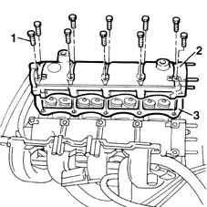

1016B26 rh cylinder head extension -r r with timing belt removed -replace gasket
- Path
- Procedures > 10 ENGINE UNIT > 1016 CYLINDER HEAD/S > 1016B cylinder head extension(s) > 1016B26 rh cylinder head extension -r r with timing belt removed -replace gasket
- Kind
- repair procedure (removal / refitting; the operation number is the code)
- Applies to
- engines: 1.6 16v; all production periods
- Interactive page
- https://sloeber94.github.io/elrnDB-fMltpl/en/#/2891195
Applies to: engines: 1.6 16v; all production periods
 Removing
Removing
 Refitting
Refitting1072B50 sleeves connecting air capacity box to inlet manifold is - r+r
1032B40 toothed-driven pulley (one) - r + r with timing belt removed
- 1032D34 timing system guard assemblies - r + r
1. Undo the retaining bolts.
2. Remove the right cylinder head extension.
3. Remove the underlying gasket from the cylinder head.

Applies to: engines: 1.6 16v; all production periods
Refitting
RemovingFit a new cylinder head extension gasket.
Tighten the cylinder head extension bolts to torque.
 | Fastening | Component | Ø | Value (daNm) |
|---|---|---|---|---|
- | Bolt | CYLINDER HEAD EXTENSION GASKET | M6 | 1.5 |
- 1032D34 timing system guard assemblies - r + r
1032B40 toothed-driven pulley (one) - r + r with timing belt removed
1072B50 sleeves connecting air capacity box to inlet manifold is - r+r
Topics linked from this page (2)
- 1032B40 toothed-driven pulley (one) - r + r with timing belt removed
- 1072B50 sleeves connecting air capacity box to inlet manifold is - r+r
Topics that link to this page (5)
- 1016B24 rh cylinder head extension - replace gasket
- 1016C10 cylinder head - r + r and replace gasket
- 1028H10 connecting rod and piston set - r r
- 1028H20 piston with connecting rod - r r
- 1036G20 camshaft controlling intake valves in top head - r + r with top head removed - includes replacement of top head if necessary